Sphere by 123RF: Turning One Campaign Brief Into Ready-to-Post Content
Sphere is an AI tool that creates social media posts for marketing teams. You describe your brand and your campaign once, and Sphere writes the captions, translates them, designs the visuals and sizes everything for Instagram, TikTok, LinkedIn and more, ready to schedule.
I'm the designer on it. This case study covers two things: how I made a product full of AI feel calm and easy to control, and how I changed the way I work with developers. I still design in Figma first, then use AI to build the design straight into the real app.
My Role
Product Designer (UI/UX)
What I worked on
- The brand setup and campaign interview flow
- The four review steps: copies, translations, visuals and sizes
- Post previews for seven social platforms, on desktop and phone
- The visual language: color, type, buttons, loading and the Sphere orb
- Home, the sidebar and the sign-in pages
- Design-to-dev handoff, using AI to turn designs into front-end code
Goals
Sphere does a lot of work for you. The design had to make that work feel trustworthy, not magical:
- Make the AI feel like a teammate, not a black box
- Take a marketer from idea to posts ready to schedule in one sitting
- Show every post the way it will really look on its platform
- Work on any screen, from a big monitor to a phone
- Close the gap between what I design and what actually ships
If people can't see what the AI is doing, they won't trust what it makes.
Background
Sphere is built for marketing teams that juggle many brands, many channels and many languages at once.
One campaign can easily turn into ten concepts, translated into several languages, posted to Instagram, Facebook, LinkedIn, TikTok and more, each platform with its own sizes. Doing that by hand takes a team weeks. Sphere's job is to do the heavy lifting and leave people with the decisions only they can make.
The platform covers:
- Brand profiles that Sphere learns from
- A campaign interview and a brief playbook
- Reviewing copies, translations, visuals and sizes
- Scheduling posts across social platforms
- An asset library for images, backgrounds and products
- Reporting, tokens and team roles per brand
Problem
There were really two problems: one in the product, and one in how we built it.
The early product could do a lot, but it explained very little. Home was a wall of cards. Starting a campaign felt like filling in a long form. The AI did its work behind a spinner, and you reviewed posts as plain text and images that looked nothing like Instagram or TikTok.
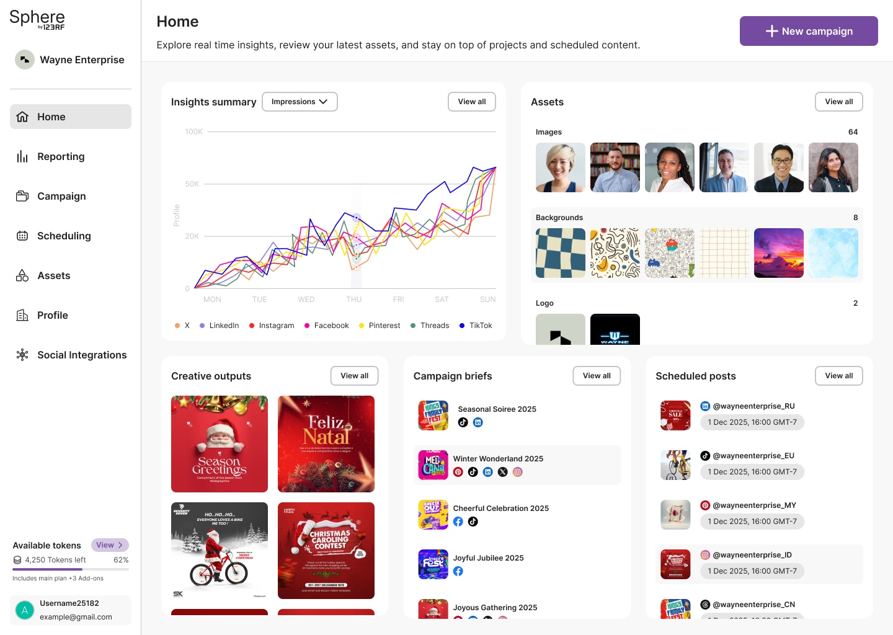
On the product side:
- Too much to fill in before anything useful happened
- AI working out of sight, with no feeling of progress
- Posts reviewed out of context, not as they'd appear
- Screens that broke with long German text or many languages
- Phone layouts treated as an afterthought
And on the team side, the classic gap. I'd design in Figma, hand over specs, and what came back was close but not quite: spacing a little off, a color slightly different, and states nobody drew, like the error, the loading or the campaign with 24 languages. Every round of "can we move this 4px" cost both sides time.
The design was right in Figma. It just kept getting a bit lost on the way to the browser.
Before vs After
Solution
I turned the whole journey into a conversation, then a review.
A campaign starts with a short interview. Sphere asks one question at a time, suggests answers based on what it already knows about the brand, and shows its reasoning under "Sphere's research". You stay in charge: pick a suggestion or type your own.
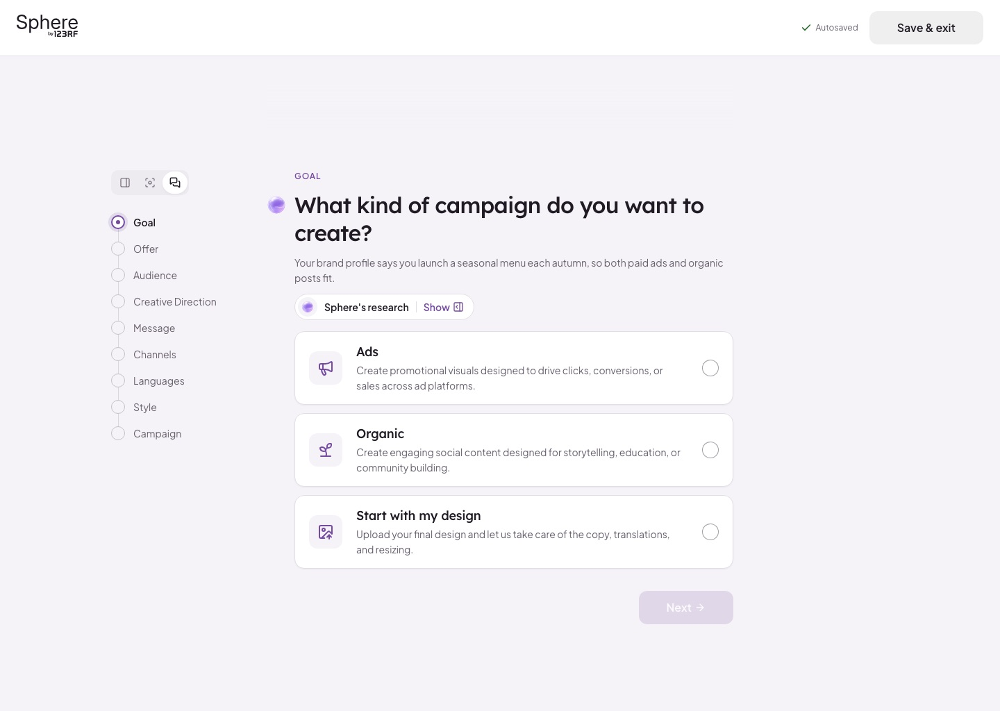
Once the interview is done, everything lands on one page: the brief playbook. You check the whole campaign and edit any part of it before a single caption or visual is made. Then come four review steps, each one building on the last.
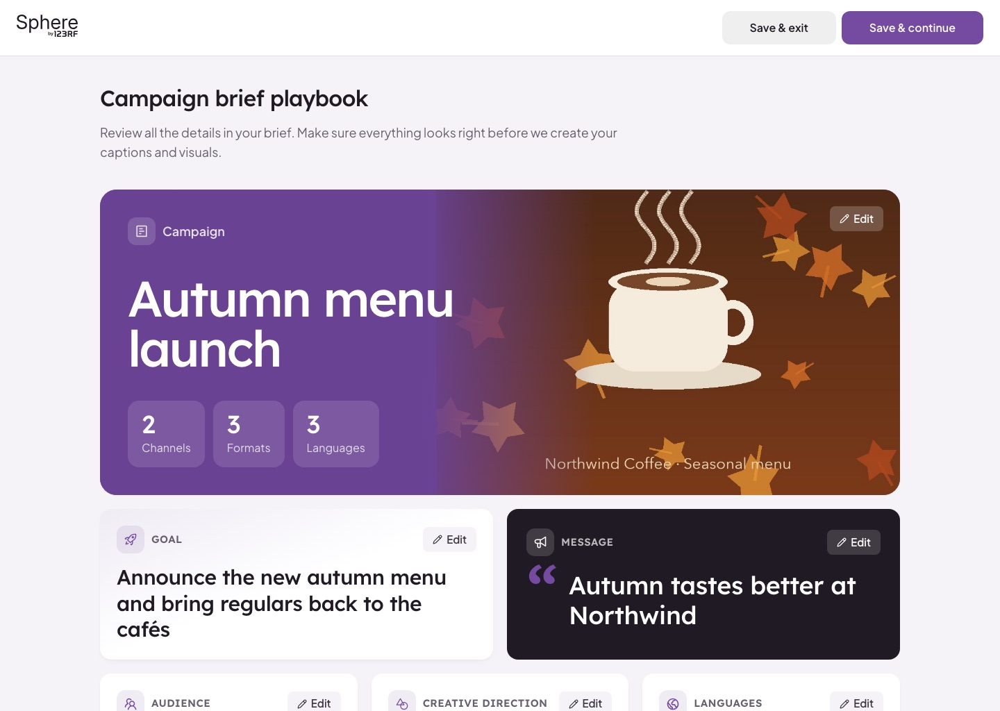
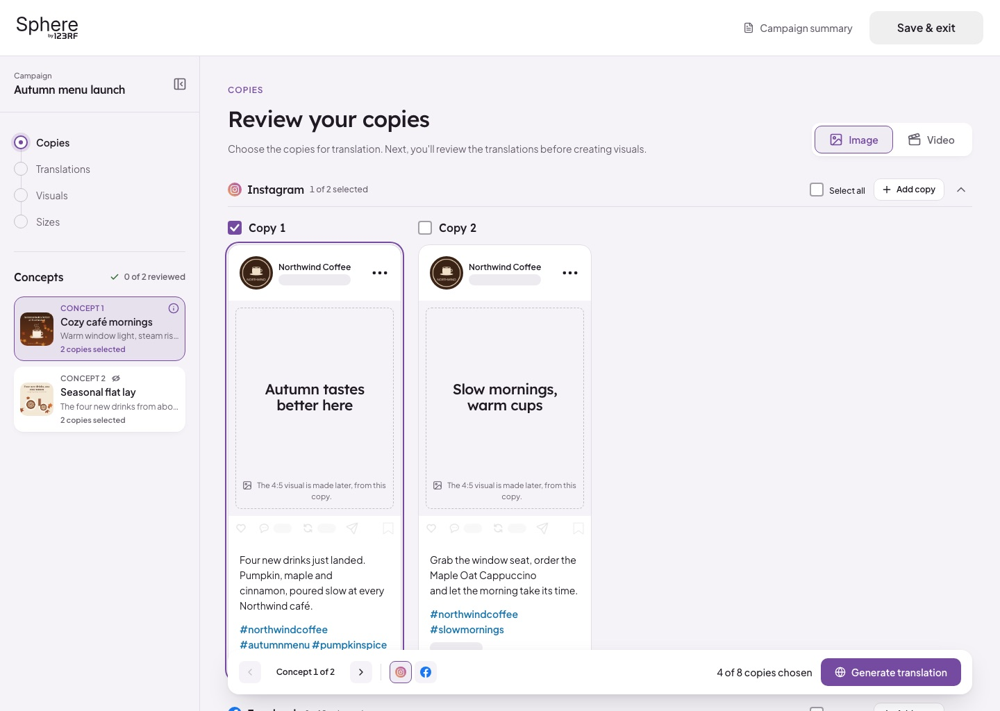
The flow, in short:
- Interview: one question at a time, with your answers building up on the side
- Brief playbook: the whole campaign on one page, editable before anything is generated
- Review: copies, translations, visuals and sizes, with a bar at the bottom that always says what's chosen and what comes next
- Previews: each post shown in its own platform's layout
The AI does the heavy lifting. The person always makes the call.
How I Work: Figma First, Then AI Takes Over
This is the part I'm most excited about.
I still start every idea in Figma. It's where I think: flows, layouts, type, a few versions side by side. Nothing beats it for exploring.
But once the direction feels right, I don't hand over a Figma link and a page of specs anymore. I take the design to Claude, an AI coding assistant, and we build it straight into the real front end together. I describe what I want in plain words, like "make the secondary button a soft grey fill with no outline" or "show three lines of the caption, then 'more'", and the AI changes the real layout, styling and text in the app. Yes, I vibecode now.
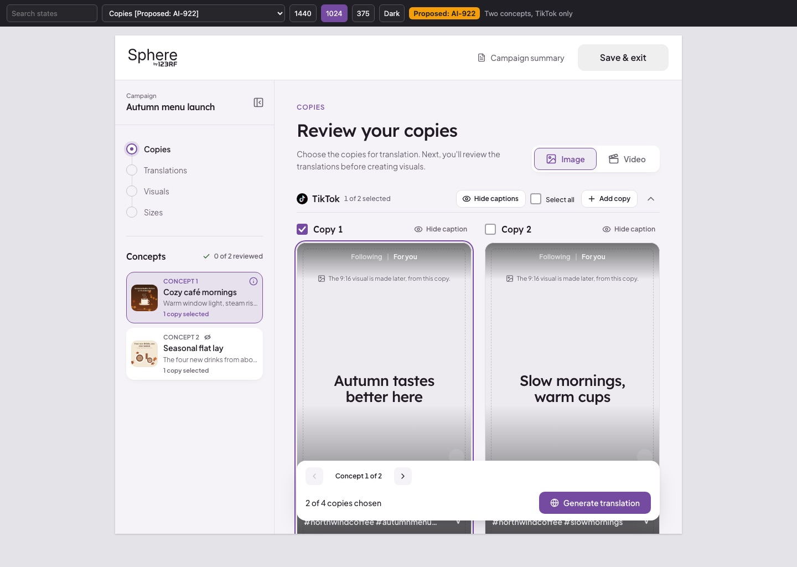
Why it works:
- Speed: a change I'd once explain in a meeting now shows up on screen in minutes
- Accuracy: what I approve is the same code that ships, so nothing gets lost in translation
- Earlier questions: I see the awkward cases early, like a 1,000-character caption with 20 hashtags
- Clear lines: I own the look, layout and words. Anything that needs new data or logic goes to the developers.
Figma is still where I think. AI is how my thinking gets to the browser without losing anything along the way.
Exploration
Building in real code made it cheap to try ideas for real, instead of just talking about them.
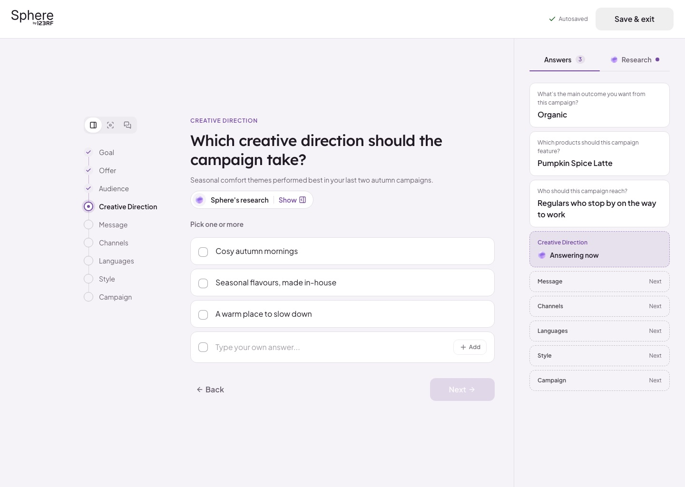
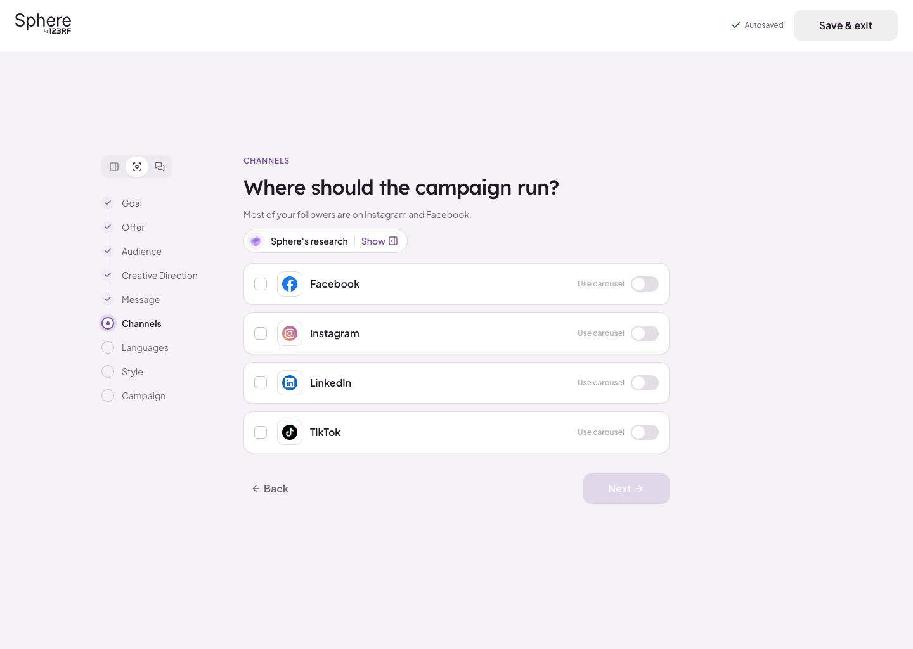
The interview is a good example. I couldn't pick between three layouts, so we kept all three and let people choose with a small switch above the steps:
- Conversation: feels like chatting with Sphere
- Split: your answers and Sphere's research in a side panel
- Focus: just the question, nothing else
The step list stays in every layout, so you never lose your place. Other things we explored and tested this way included how TikTok captions fold, how the review bar behaves on a phone, and what happens when a campaign runs in 24 languages.
When trying an idea costs minutes instead of a sprint, you stop arguing and start testing.
Design System
A product that generates content needs a quiet, steady frame around it. The system's job is to let the content stand out.
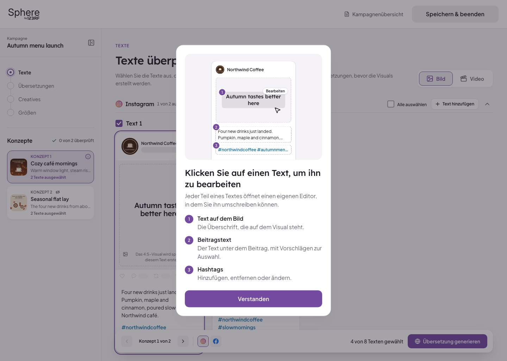
This included:
- Lexend for titles and Plus Jakarta Sans for reading, set as ten type roles
- One purple, #754AA1, with neutrals tinted toward the same hue
- Three button sizes (48, 40 and 32px) with matching corners
- Soft shadow cards instead of outlines everywhere
- The Sphere orb: a lavender glass ball that shows when the AI is thinking
- One loading page used everywhere, so waiting always feels the same
Because the system lives in code, a token change reaches every screen at once, not just the ones I remembered to update.
Design
The details that matter most are the ones people look at longest: the posts themselves.
Key design decisions included:
- Platform previews that match how each platform really looks
- TikTok cards that show three lines of caption, then "more"
- Long captions opening over a dark layer with their own scroll
- Hide captions to judge the visuals on their own
- A bottom bar that always tells you what's chosen and what's next
- Phone layouts designed as carefully as desktop
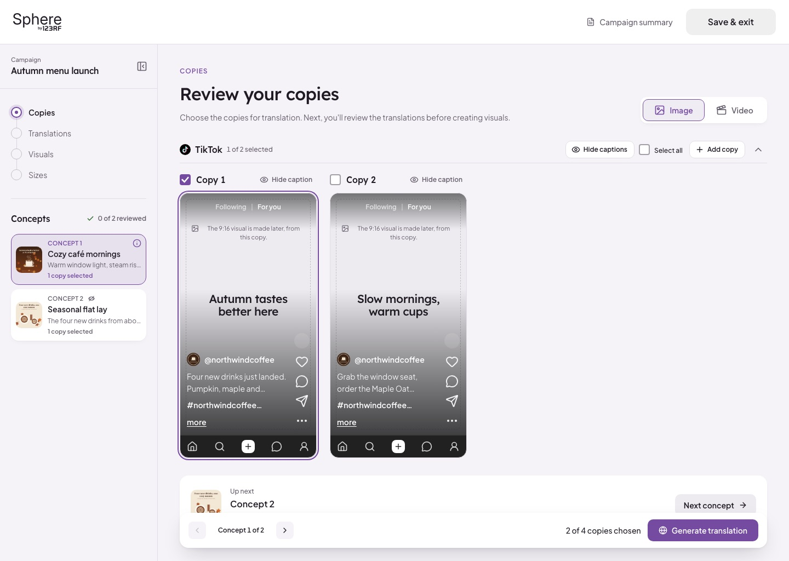
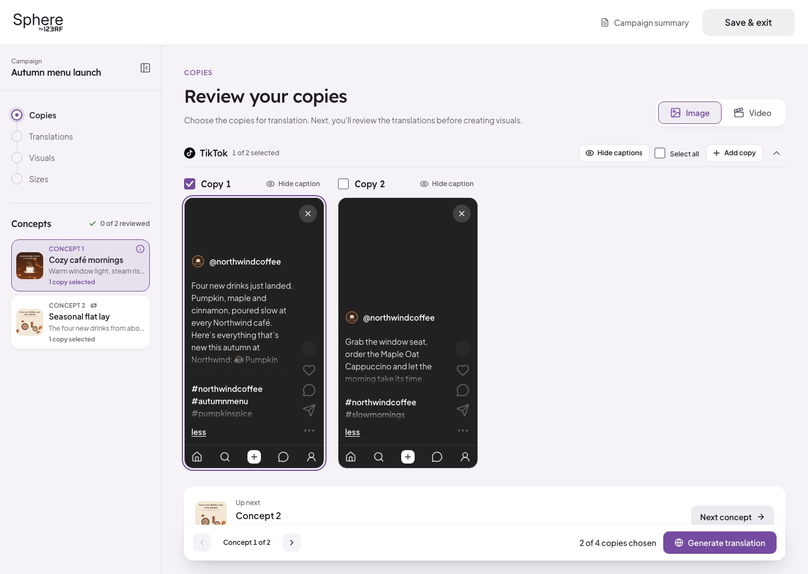
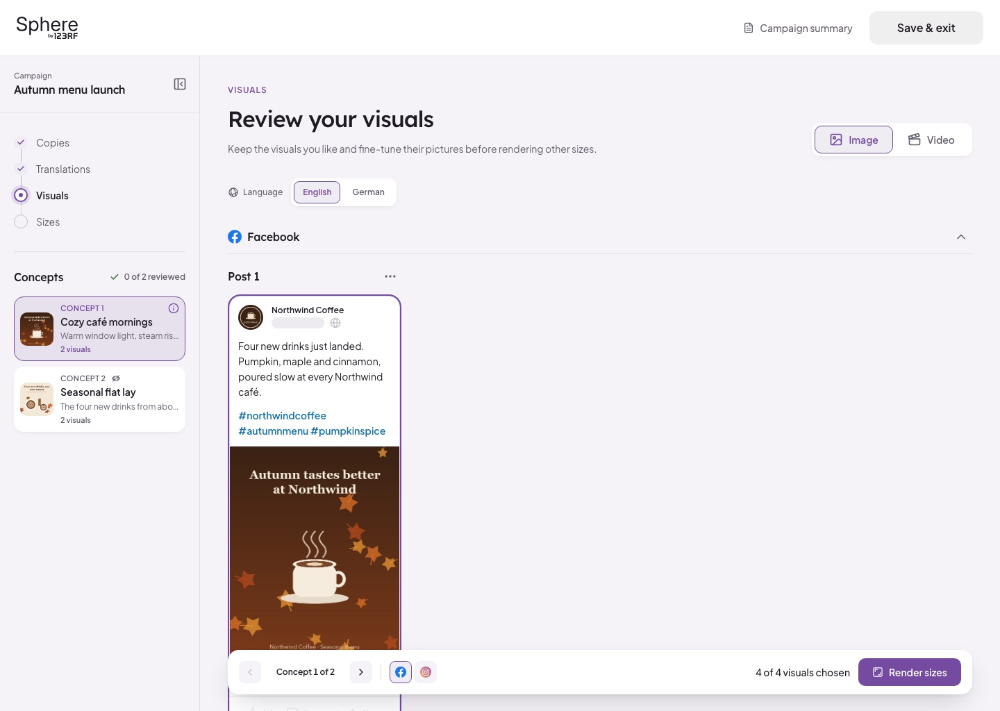
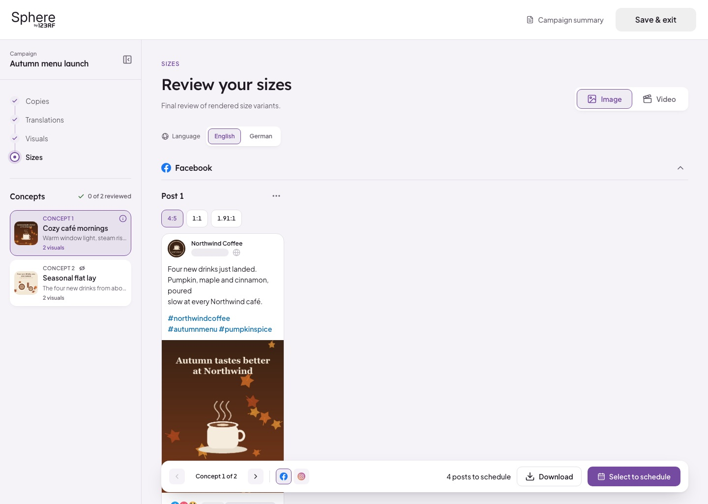
Outcome
Sphere now feels like one connected flow, from the first question to posts ready to schedule, on any screen.
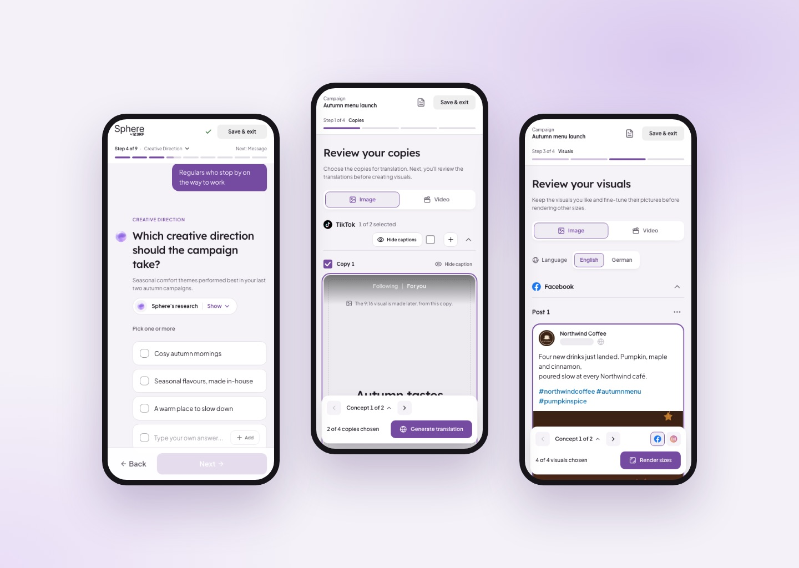
People can see what the AI is doing and why, step in whenever they want, and review posts that look like the real thing. For the team, handoffs come with every state included, and small fixes that used to take a few rounds now land the same day.
The biggest change wasn't a screen. It was the distance between my design and the shipped product, which got a lot shorter.
Key Takeaways
Sphere taught me that designing for AI and designing with AI are really the same lesson: keep people in control, and make the work visible.
In the product, that meant showing the AI's research, asking one question at a time and previewing posts as they truly look. People trust what they can see and change.
In my own process, it meant letting AI do what it's good at, which is turning a clear design into exact code, while I keep doing what I'm good at: deciding what the product should feel like. Figma is still my sketchbook. It's just no longer the end of the line.
It also changed how I work with developers. We talk less about pixels and more about data, logic and edge cases, which is where their time is best spent anyway.
Overall, this project strengthened my approach with a stronger focus on:
- Making AI's work visible and easy to override
- Designing every state, not just the happy path
- Using AI to carry design into code accurately
- Testing ideas in the real product, early
- Keeping a clear line between design and engineering work